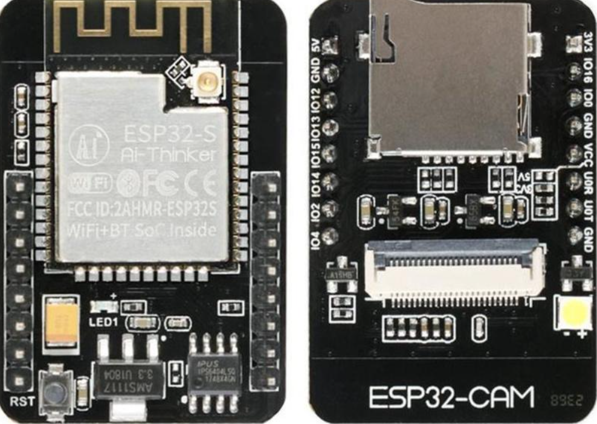
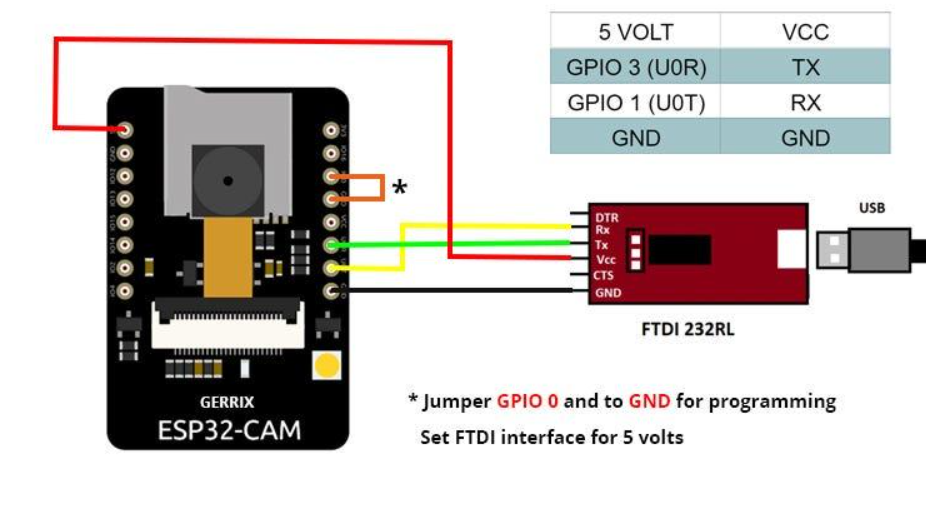
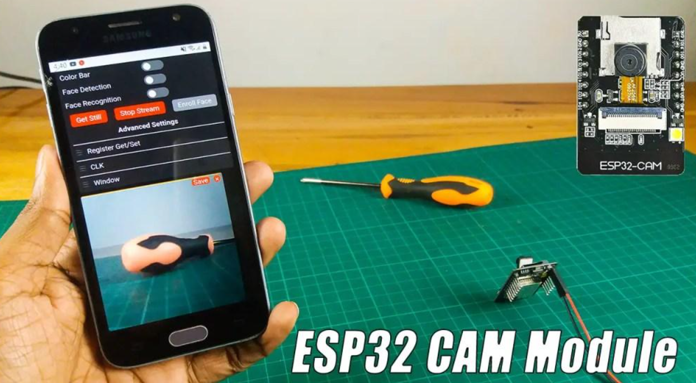
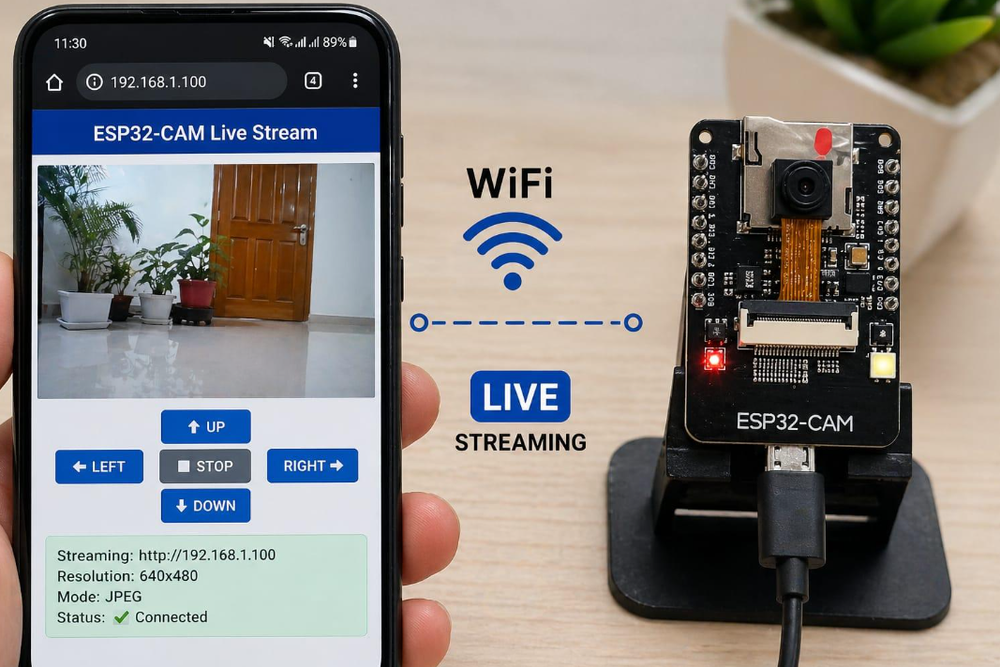

Live Video Streaming
View camera images continuously through a web browser.
VJAYA ROBOTICS PROJECT
ESP32-CAM WIFI PROJECTBuild a wireless camera system using the AI Thinker ESP32-CAM and OV2640 camera module. Stream live video over Wi-Fi and view the camera feed directly from your smartphone or computer browser.
Explore ProjectPROJECT OVERVIEW
This project uses an AI Thinker ESP32-CAM development board with an OV2640 camera sensor to capture images and provide live video streaming through a Wi-Fi web server.
The ESP32-CAM connects to a 2.4 GHz Wi-Fi network and starts a web server. Users can enter the ESP32-CAM IP address in a browser to view the camera feed.




WHAT IT CAN DO
View camera images continuously through a web browser.
Connect the camera to a Wi-Fi network without requiring an Ethernet cable.
Watch the camera feed from a smartphone connected to the same network.
Access the camera stream through a desktop or laptop browser.
Camera initialization and Wi-Fi functions are organized into separate files.
HARDWARE REQUIREMENTS
SOFTWARE REQUIREMENTS
HOW IT WORKS
CAMERA / WIFI LOGIC
| Input / Condition | System Action |
|---|---|
| ESP32-CAM powered ON | Initialize camera module |
| Camera initialization successful | Continue to Wi-Fi connection |
| Wi-Fi credentials valid | Connect to Wi-Fi network |
| Wi-Fi connected | Obtain local IP address |
| Browser opens device IP | Display streaming webpage |
| Browser requests /capture | Capture JPEG image |
| Image captured successfully | Send image to browser |
| Camera capture fails | Return an HTTP error response |
PROGRAM STRUCTURE
Main setup, web server initialization and request handling.
Wi-Fi credentials, camera pins and camera settings.
Wi-Fi initialization, connection and IP address management.
Camera configuration, PSRAM detection and camera initialization.
PROGRAMMING
Download the ESP32-CAM Live Video Streaming project files from the source folder.
ESP32_CAM_STREAMING.ino
Download Code ↓ 📄config.h
Download Code ↓ 📄wifi_manager.h
Download Code ↓ 📄wifi_manager.cpp
Download Code ↓ 📄camera_module.h
Download Code ↓ 📄camera_module.cpp
Download Code ↓PROJECT DEMONSTRATION
ESP32-CAM Live Video Demonstration
Add your actual camera photograph, live streaming screenshot or demonstration video here.IMPORTANT INFORMATION